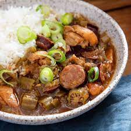

Gumbo Recipe

Description
Gumbo is a stew popular in the U.S. state of Louisiana,
and is the official state cuisine. Gumbo consists primarily of a
strongly-flavored stock, meat or shellfish, a thickener, and the
Creole "holy trinity" ― celery, bell peppers, and onions.
Gumbo is often categorized by the type of thickener used,
whether okra or filé powder (dried and ground sassafras leaves).
Ingredients
- 1 (2 to 3 pound) whole chicken
- 1 tablespoon butter
- 1 large onion, chopped
- 1 green bell pepper, chopped
- 2 stalks celery, chopped
- 3 cloves garlic, minced
- 1 (14.5 ounce) can diced tomatoes
- ½ (10 ounce) can diced tomatoes with green chilies, undrained
- 2 cups sliced andouille sausage
- 2 cups okra
- ¾ cup frozen corn
- salt to taste
- ground black pepper to taste
- ½ teaspoon cayenne pepper
- 1 cup uncooked medium shrimp, peeled and deveined (Optional)
- 2 teaspoons file powder
- 4 cups cooked rice
Steps
- Place chicken in a large pot; add enough water to cover.
Cover pot and bring to a boil; reduce heat to medium-low
and simmer until meat falls off the bone, about 90 minutes.
Remove chicken, let cool, and shred meat; skim broth and
reserve.
- Melt butter in a large skillet over medium heat; cook and
stir onions, bell pepper, and celery until tender, about 5
minutes. Stir in garlic and cook until fragrant, about 1 minute.
Add diced tomatoes, tomatoes with green chilies, andouille
sausage, okra, corn, salt, pepper, cayenne pepper, and reserved
broth; bring to a gentle boil over medium-high heat. Simmer
until liquid is reduced by half, about 30 minutes.
- Mix shredded chicken and shrimp into skillet; simmer
until shrimp turns bright pink and okra is tender, 5 to
7 minutes. Remove skillet from heat and stir in file powder.
Serve with rice.